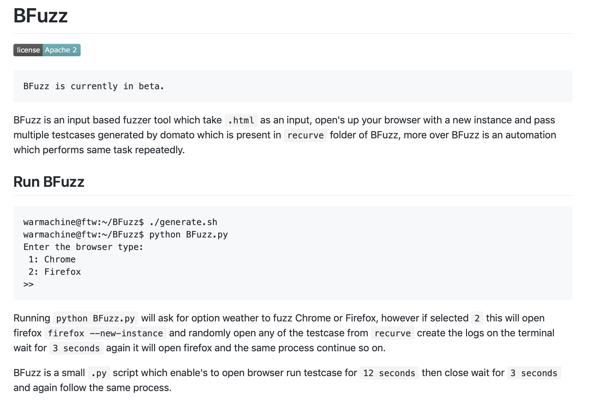
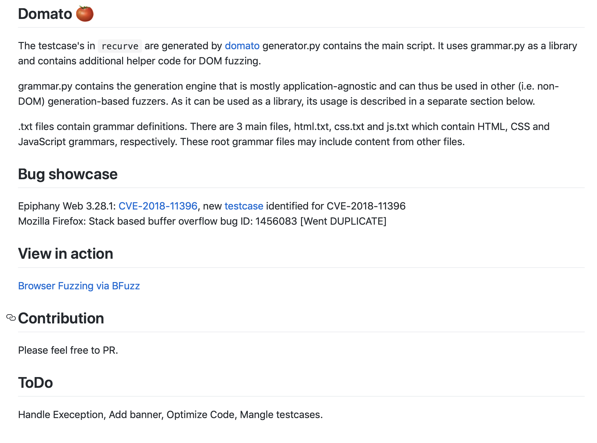
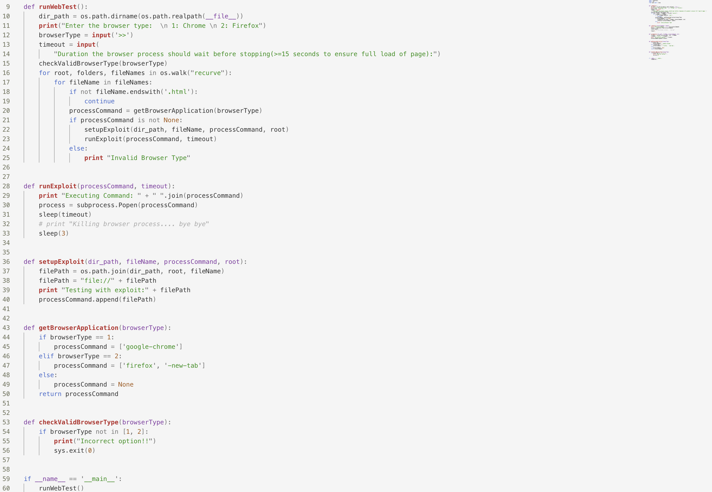

<!DOCTYPE html>
<html>
<head>
<title>BFuzz源码阅读笔记</title>
<meta http-equiv="Content-Type" content="text/html; charset=utf-8" />
<style type="text/css">
/* GitHub stylesheet for MarkdownPad (http://markdownpad.com) */
/* Author: Nicolas Hery - http://nicolashery.com */
/* Version: b13fe65ca28d2e568c6ed5d7f06581183df8f2ff */
/* Source: https://github.com/nicolahery/markdownpad-github */

/* RESET
=============================================================================*/

html, body, div, span, applet, object, iframe, h1, h2, h3, h4, h5, h6, p, blockquote, pre, a, abbr, acronym, address, big, cite, code, del, dfn, em, img, ins, kbd, q, s, samp, small, strike, strong, sub, sup, tt, var, b, u, i, center, dl, dt, dd, ol, ul, li, fieldset, form, label, legend, table, caption, tbody, tfoot, thead, tr, th, td, article, aside, canvas, details, embed, figure, figcaption, footer, header, hgroup, menu, nav, output, ruby, section, summary, time, mark, audio, video {
  margin: 0;
  padding: 0;
  border: 0;
}

/* BODY
=============================================================================*/

body {
  font-family: Helvetica, arial, freesans, clean, sans-serif;
  font-size: 14px;
  line-height: 1.6;
  color: #333;
  background-color: #fff;
  padding: 20px;
  max-width: 960px;
  margin: 0 auto;
}

body>*:first-child {
  margin-top: 0 !important;
}

body>*:last-child {
  margin-bottom: 0 !important;
}

/* BLOCKS
=============================================================================*/

p, blockquote, ul, ol, dl, table, pre {
  margin: 15px 0;
}

/* HEADERS
=============================================================================*/

h1, h2, h3, h4, h5, h6 {
  margin: 20px 0 10px;
  padding: 0;
  font-weight: bold;
  -webkit-font-smoothing: antialiased;
}

h1 tt, h1 code, h2 tt, h2 code, h3 tt, h3 code, h4 tt, h4 code, h5 tt, h5 code, h6 tt, h6 code {
  font-size: inherit;
}

h1 {
  font-size: 28px;
  color: #000;
}

h2 {
  font-size: 24px;
  border-bottom: 1px solid #ccc;
  color: #000;
}

h3 {
  font-size: 18px;
}

h4 {
  font-size: 16px;
}

h5 {
  font-size: 14px;
}

h6 {
  color: #777;
  font-size: 14px;
}

body>h2:first-child, body>h1:first-child, body>h1:first-child+h2, body>h3:first-child, body>h4:first-child, body>h5:first-child, body>h6:first-child {
  margin-top: 0;
  padding-top: 0;
}

a:first-child h1, a:first-child h2, a:first-child h3, a:first-child h4, a:first-child h5, a:first-child h6 {
  margin-top: 0;
  padding-top: 0;
}

h1+p, h2+p, h3+p, h4+p, h5+p, h6+p {
  margin-top: 10px;
}

/* LINKS
=============================================================================*/

a {
  color: #4183C4;
  text-decoration: none;
}

a:hover {
  text-decoration: underline;
}

/* LISTS
=============================================================================*/

ul, ol {
  padding-left: 30px;
}

ul li > :first-child, 
ol li > :first-child, 
ul li ul:first-of-type, 
ol li ol:first-of-type, 
ul li ol:first-of-type, 
ol li ul:first-of-type {
  margin-top: 0px;
}

ul ul, ul ol, ol ol, ol ul {
  margin-bottom: 0;
}

dl {
  padding: 0;
}

dl dt {
  font-size: 14px;
  font-weight: bold;
  font-style: italic;
  padding: 0;
  margin: 15px 0 5px;
}

dl dt:first-child {
  padding: 0;
}

dl dt>:first-child {
  margin-top: 0px;
}

dl dt>:last-child {
  margin-bottom: 0px;
}

dl dd {
  margin: 0 0 15px;
  padding: 0 15px;
}

dl dd>:first-child {
  margin-top: 0px;
}

dl dd>:last-child {
  margin-bottom: 0px;
}

/* CODE
=============================================================================*/

pre, code, tt {
  font-size: 12px;
  font-family: Consolas, "Liberation Mono", Courier, monospace;
}

code, tt {
  margin: 0 0px;
  padding: 0px 0px;
  white-space: nowrap;
  border: 1px solid #eaeaea;
  background-color: #f8f8f8;
  border-radius: 3px;
}

pre>code {
  margin: 0;
  padding: 0;
  white-space: pre;
  border: none;
  background: transparent;
}

pre {
  background-color: #f8f8f8;
  border: 1px solid #ccc;
  font-size: 13px;
  line-height: 19px;
  overflow: auto;
  padding: 6px 10px;
  border-radius: 3px;
}

pre code, pre tt {
  background-color: transparent;
  border: none;
}

kbd {
    -moz-border-bottom-colors: none;
    -moz-border-left-colors: none;
    -moz-border-right-colors: none;
    -moz-border-top-colors: none;
    background-color: #DDDDDD;
    background-image: linear-gradient(#F1F1F1, #DDDDDD);
    background-repeat: repeat-x;
    border-color: #DDDDDD #CCCCCC #CCCCCC #DDDDDD;
    border-image: none;
    border-radius: 2px 2px 2px 2px;
    border-style: solid;
    border-width: 1px;
    font-family: "Helvetica Neue",Helvetica,Arial,sans-serif;
    line-height: 10px;
    padding: 1px 4px;
}

/* QUOTES
=============================================================================*/

blockquote {
  border-left: 4px solid #DDD;
  padding: 0 15px;
  color: #777;
}

blockquote>:first-child {
  margin-top: 0px;
}

blockquote>:last-child {
  margin-bottom: 0px;
}

/* HORIZONTAL RULES
=============================================================================*/

hr {
  clear: both;
  margin: 15px 0;
  height: 0px;
  overflow: hidden;
  border: none;
  background: transparent;
  border-bottom: 4px solid #ddd;
  padding: 0;
}

/* TABLES
=============================================================================*/

table th {
  font-weight: bold;
}

table th, table td {
  border: 1px solid #ccc;
  padding: 6px 13px;
}

table tr {
  border-top: 1px solid #ccc;
  background-color: #fff;
}

table tr:nth-child(2n) {
  background-color: #f8f8f8;
}

/* IMAGES
=============================================================================*/

img {
  max-width: 100%
}
</style>
<style type="text/css">
.highlight  { background: #ffffff; }
.highlight .c { color: #999988; font-style: italic } /* Comment */
.highlight .err { color: #a61717; background-color: #e3d2d2 } /* Error */
.highlight .k { font-weight: bold } /* Keyword */
.highlight .o { font-weight: bold } /* Operator */
.highlight .cm { color: #999988; font-style: italic } /* Comment.Multiline */
.highlight .cp { color: #999999; font-weight: bold } /* Comment.Preproc */
.highlight .c1 { color: #999988; font-style: italic } /* Comment.Single */
.highlight .cs { color: #999999; font-weight: bold; font-style: italic } /* Comment.Special */
.highlight .gd { color: #000000; background-color: #ffdddd } /* Generic.Deleted */
.highlight .gd .x { color: #000000; background-color: #ffaaaa } /* Generic.Deleted.Specific */
.highlight .ge { font-style: italic } /* Generic.Emph */
.highlight .gr { color: #aa0000 } /* Generic.Error */
.highlight .gh { color: #999999 } /* Generic.Heading */
.highlight .gi { color: #000000; background-color: #ddffdd } /* Generic.Inserted */
.highlight .gi .x { color: #000000; background-color: #aaffaa } /* Generic.Inserted.Specific */
.highlight .go { color: #888888 } /* Generic.Output */
.highlight .gp { color: #555555 } /* Generic.Prompt */
.highlight .gs { font-weight: bold } /* Generic.Strong */
.highlight .gu { color: #aaaaaa } /* Generic.Subheading */
.highlight .gt { color: #aa0000 } /* Generic.Traceback */
.highlight .kc { font-weight: bold } /* Keyword.Constant */
.highlight .kd { font-weight: bold } /* Keyword.Declaration */
.highlight .kp { font-weight: bold } /* Keyword.Pseudo */
.highlight .kr { font-weight: bold } /* Keyword.Reserved */
.highlight .kt { color: #445588; font-weight: bold } /* Keyword.Type */
.highlight .m { color: #009999 } /* Literal.Number */
.highlight .s { color: #d14 } /* Literal.String */
.highlight .na { color: #008080 } /* Name.Attribute */
.highlight .nb { color: #0086B3 } /* Name.Builtin */
.highlight .nc { color: #445588; font-weight: bold } /* Name.Class */
.highlight .no { color: #008080 } /* Name.Constant */
.highlight .ni { color: #800080 } /* Name.Entity */
.highlight .ne { color: #990000; font-weight: bold } /* Name.Exception */
.highlight .nf { color: #990000; font-weight: bold } /* Name.Function */
.highlight .nn { color: #555555 } /* Name.Namespace */
.highlight .nt { color: #000080 } /* Name.Tag */
.highlight .nv { color: #008080 } /* Name.Variable */
.highlight .ow { font-weight: bold } /* Operator.Word */
.highlight .w { color: #bbbbbb } /* Text.Whitespace */
.highlight .mf { color: #009999 } /* Literal.Number.Float */
.highlight .mh { color: #009999 } /* Literal.Number.Hex */
.highlight .mi { color: #009999 } /* Literal.Number.Integer */
.highlight .mo { color: #009999 } /* Literal.Number.Oct */
.highlight .sb { color: #d14 } /* Literal.String.Backtick */
.highlight .sc { color: #d14 } /* Literal.String.Char */
.highlight .sd { color: #d14 } /* Literal.String.Doc */
.highlight .s2 { color: #d14 } /* Literal.String.Double */
.highlight .se { color: #d14 } /* Literal.String.Escape */
.highlight .sh { color: #d14 } /* Literal.String.Heredoc */
.highlight .si { color: #d14 } /* Literal.String.Interpol */
.highlight .sx { color: #d14 } /* Literal.String.Other */
.highlight .sr { color: #009926 } /* Literal.String.Regex */
.highlight .s1 { color: #d14 } /* Literal.String.Single */
.highlight .ss { color: #990073 } /* Literal.String.Symbol */
.highlight .bp { color: #999999 } /* Name.Builtin.Pseudo */
.highlight .vc { color: #008080 } /* Name.Variable.Class */
.highlight .vg { color: #008080 } /* Name.Variable.Global */
.highlight .vi { color: #008080 } /* Name.Variable.Instance */
.highlight .il { color: #009999 } /* Literal.Number.Integer.Long */
.pl-c {
    color: #969896;
}

.pl-c1,.pl-mdh,.pl-mm,.pl-mp,.pl-mr,.pl-s1 .pl-v,.pl-s3,.pl-sc,.pl-sv {
    color: #0086b3;
}

.pl-e,.pl-en {
    color: #795da3;
}

.pl-s1 .pl-s2,.pl-smi,.pl-smp,.pl-stj,.pl-vo,.pl-vpf {
    color: #333;
}

.pl-ent {
    color: #63a35c;
}

.pl-k,.pl-s,.pl-st {
    color: #a71d5d;
}

.pl-pds,.pl-s1,.pl-s1 .pl-pse .pl-s2,.pl-sr,.pl-sr .pl-cce,.pl-sr .pl-sra,.pl-sr .pl-sre,.pl-src,.pl-v {
    color: #df5000;
}

.pl-id {
    color: #b52a1d;
}

.pl-ii {
    background-color: #b52a1d;
    color: #f8f8f8;
}

.pl-sr .pl-cce {
    color: #63a35c;
    font-weight: bold;
}

.pl-ml {
    color: #693a17;
}

.pl-mh,.pl-mh .pl-en,.pl-ms {
    color: #1d3e81;
    font-weight: bold;
}

.pl-mq {
    color: #008080;
}

.pl-mi {
    color: #333;
    font-style: italic;
}

.pl-mb {
    color: #333;
    font-weight: bold;
}

.pl-md,.pl-mdhf {
    background-color: #ffecec;
    color: #bd2c00;
}

.pl-mdht,.pl-mi1 {
    background-color: #eaffea;
    color: #55a532;
}

.pl-mdr {
    color: #795da3;
    font-weight: bold;
}

.pl-mo {
    color: #1d3e81;
}
.task-list {
padding-left:10px;
margin-bottom:0;
}

.task-list li {
    margin-left: 20px;
}

.task-list-item {
list-style-type:none;
padding-left:10px;
}

.task-list-item label {
font-weight:400;
}

.task-list-item.enabled label {
cursor:pointer;
}

.task-list-item+.task-list-item {
margin-top:3px;
}

.task-list-item-checkbox {
display:inline-block;
margin-left:-20px;
margin-right:3px;
vertical-align:1px;
}
</style>
</head>
<body>
<h1 id="bfuzz-">BFuzz源码阅读笔记</h1>
<p><strong>Author:wnagzihxa1n<br>E-Mail:wnagzihxa1n@gmail.com</strong></p>
<p>BFuzz是一个浏览器的Fuzzer，几个月前还在GitHub收割了一波的Star，我当时没仔细看，最近才有空看了一下源码，感觉还行吧</p>
<ul>
<li><a href="https://github.com/RootUp/BFuzz">https://github.com/RootUp/BFuzz</a></li></ul>
<p>这是README，现在应该是残废状态了，两个月没更新</p>
<p>大概意思就是说：以谷歌开发的DOM引擎Fuzzer样例生成器<code>domato</code>生成的<code>.html</code>文件作为输入，然后通过循环打开，看是否崩溃（很常规的非源码Fuzz手段）</p>
<p></p>
<p>具体使用方法如下，恕我直言，实在是太不优雅了</p>
<pre><code>warmachine@ftw:~/BFuzz$ ./generate.sh
warmachine@ftw:~/BFuzz$ python BFuzz.py 
Enter the browser type:
 1: Chrome 
 2: Firefox
&gt;&gt;
</code></pre><p>测试样例还需要手动生成？？？</p>
<p>谁家的Fuzzer先手动生成一堆样例然后再去跑？？？</p>
<p>generate.sh的源码</p>
<pre><code>#!/bin/bash
cd domato
python generator.py --output_dir ../recurve/ --no_of_files 50
</code></pre><p>运行主程序后，会选择是哪个浏览器，目前支持Chrome和Firefox，输入数字即可，然后就可以跑起来了，啥后续操作也没有</p>
<p>这里介绍了一下这是谷歌的引擎以及后需要需要做的事情，总之这个框架（其实不能算作框架，最简单的异常捕获模块都没有）比较一般</p>
<p></p>
<p>主程序的代码就这么点</p>
<p></p>
<p>我们来看看代码细节</p>
<p>首先是入口，获取当前路径<code>dir_path</code>，然后让用户选择Fuzz的对象，目前支持Chrome和Firefox，再输入一个等待时间<code>timeout</code>，这个等待时间用于让浏览器完全加载Fuzz样例，因为我们测试的是DOM树的渲染，所以Fuzz样例会非常复杂，浏览器加载起来相对需要更多时间，所以我们要等待一会</p>
<p>函数<code>checkValidBrowserType()</code>检查输入的是否是<code>1</code>或者<code>2</code>，如果不是则退出，接下来的<code>for</code>循环里获取到文件夹<code>recurve</code>所有的测试样例，这里的样例全部由<code>domato</code>生成，</p>
<pre><code>#!/usr/bin/python

import os
import subprocess
import sys
from time import sleep

def runWebTest():
    dir_path = os.path.dirname(os.path.realpath(__file__))
    print(&quot;Enter the browser type:  \n 1: Chrome \n 2: Firefox&quot;)
    browserType = input(&#39;&gt;&gt;&#39;)
    timeout = input(
        &quot;Duration the browser process should wait before stopping(&gt;=15 seconds to ensure full load of page):&quot;)
    checkValidBrowserType(browserType)
    # 遍历recurve文件夹下的文件，进行循环的测试
    for root, folders, fileNames in os.walk(&quot;recurve&quot;):
        for fileName in fileNames:
            # 如果不是.html结尾的就跳过
            if not fileName.endswith(&#39;.html&#39;):
                continue
            # 通过用户输入的编号来确定要测试的浏览器和命令行参数
            processCommand = getBrowserApplication(browserType)
            # 如果命令行参数有效，开始Fuzz
            if processCommand is not None:
                # 设置Fuzz各种参数
                setupExploit(dir_path, fileName, processCommand, root)
                # 进行Fuzz
                runExploit(processCommand, timeout)
            else:
                print &quot;Invalid Browser Type&quot;

if __name__ == &#39;__main__&#39;:
    runWebTest()
</code></pre><p>判断输入的是否合法</p>
<pre><code>def checkValidBrowserType(browserType):
    if browserType not in [1, 2]:
        print(&quot;Incorrect option!!&quot;)
        sys.exit(0)
</code></pre><p>通过用户的输入来获得浏览器类型，并确定之后的命令行参数</p>
<pre><code>def getBrowserApplication(browserType):
    # 输入1表示Chrome
    if browserType == 1:
        processCommand = [&#39;google-chrome&#39;]
    # 输入2表示Firefox
    elif browserType == 2:
        processCommand = [&#39;firefox&#39;, &#39;-new-tab&#39;]
    # 输入其它的返回None
    else:
        processCommand = None
    return processCommand
</code></pre><p>构造Fuzz测试文件的路径，这里的<code>fileName</code>为循环时提供的文件名，最后将路径添加到命令行变量<code>processCommand</code>里</p>
<pre><code>def setupExploit(dir_path, fileName, processCommand, root):
    filePath = os.path.join(dir_path, root, fileName)
    filePath = &quot;file://&quot; + filePath
    # 最终测试文件路径构造效果如下：
    # Testing with exploit:file:///home/wnagzihxa1n/Desktop/BFuzz-master/recurve/fuzz-1.html
    print &quot;Testing with exploit:&quot; + filePath
    processCommand.append(filePath)
</code></pre><p>最终执行命令行使用的是函数<code>subprocess.Popen()</code></p>
<pre><code>def runExploit(processCommand, timeout):
    print &quot;Executing Command: &quot; + &quot; &quot;.join(processCommand)
    process = subprocess.Popen(processCommand)
    # 此处睡眠我们设置的时间来保证浏览器能够完全解析测试文件
    sleep(timeout)
    # print &quot;Killing browser process.... bye bye&quot;
    sleep(3)
</code></pre><p>对这个Fuzzer我有几点想法：</p>
<ol>
<li>这个其实不能算作一个Fuzzer，毕竟啥都没有，好歹得有异常捕获模块，不然崩溃了找谁要Poc复现？</li><li>作者应该是不再维护了，所以这存粹是一个画大饼式的项目</li><li>样例生成模块我有一个比较优雅的实现方式，<code>domato</code>本身就有导出的样例生成函数，直接调用即可，这样也可以保证不需要人工干预生成，比如循环生成100个，跑完后全部删除，再去生成100个，这就比较优雅了</li></ol>

</body>
</html>
<!-- This document was created with MarkdownPad, the Markdown editor for Windows (http://markdownpad.com) -->
